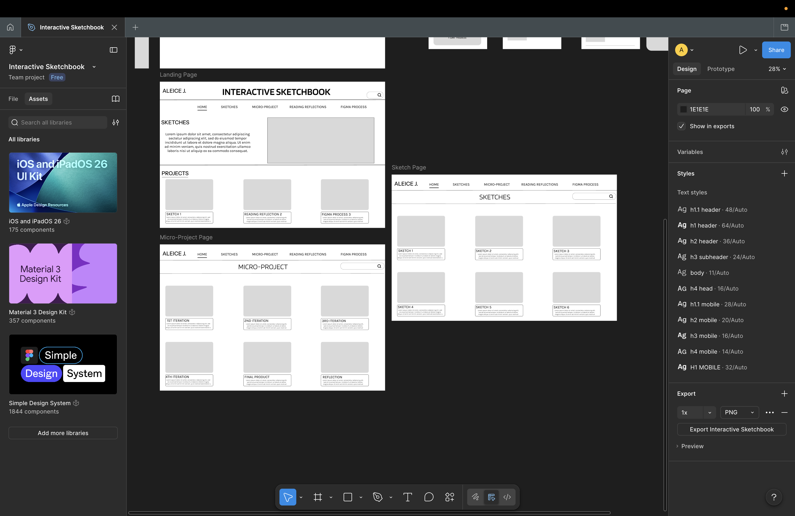

Week 3- Reflection
On the desktop landing page, I added a horizontal navigation bar (Home, Sketches, Micro-Project, Reading Reflections, Figma process), that shows across all pages. Below that, content is previewed in sections where users can click into specific work. On the mobile page, it is more simplified using buttons and a hamburger menu. This allows users to access the same sections in a way that fits a smaller screen. Within pages, navigation continues through repeated grid layouts, where each item is clickable and can take you to a specific project or sketch. The hierarchy logic is established through both typography and layout. The larger headings and section titles define primary areas. I included supporting texts and boxes to input images which provides consistency across pages. On the micro-project page, the hierarchy becomes more structured through sequencing. I labeled the iterations and placed them in order from 1-4 and included the final project and reflection. On the sketchbook page, a grid system is used where each sketch is given the same "style" which helps to organize it more clearly. Desigining the mobile pages first helped to simplify what is needed on them, as well as helped me to understand what should be added on the desktop version. On the mobile pages, I had to establish what should be seen first due to the smaller screen size and now things having to be stacked vertically. This helped in realizing what is and isn't neccessary. The mobile influenced the desktop version by expanding to a wider format. This helped to ensure consistency across devices, instead of designing two completely different systems. This design aligns with principles from Norman, Nielsen, and Shneiderman. From Normman's perspective, the interface emphasizes visibility, and affordances. Buttons, navigation links and image boxes clearly indicate where interaction can happen. In Nielsen's Heuristics, the system supports consistency and recognition rather than recall. I amde sure the same navigation and layout patterns repeat across all pages, so users do not have to relearn how to navigate through the site. From Shneiderman's rules, the design focuses on consistency and reducing memory load by keeping the navigation visible and predictable. The structured layouts also help to support a clear sequence, especially in the micro-page where users can follow my process from the beginning to the end. Some parts are still unresolved. I have the hamburger menu on the mobile page, but am unsure if it should also be included on the desktop if I have the navigation going across the screen. I think I could also work on communicating better between sections on the desktop and mobile landing pages. I am not sure if the hierarchy is clearly defined there.
https://www.figma.com/design/8IZWsLUZzm1JwqsXdeCWA1/Interactive-Sketchbook?node-id=0-1&p=f&t=lr4gzFkeNNHe95Zs-0
